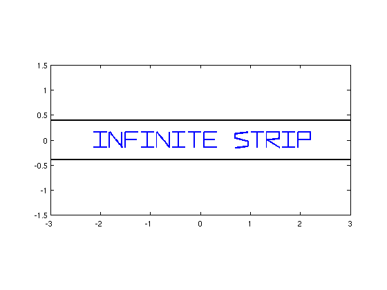
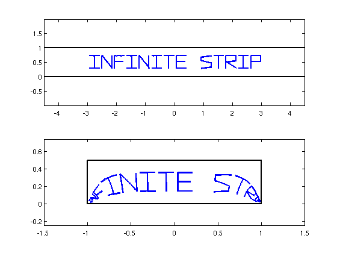

Schwarz-Christoffel toolbox and Chebfun
Nick Trefethen, October 2010
Contents
(Chebfun example complex/SCToolbox.m)
Chebfun's SCRIBBLE command is good for illustrating conformal maps in the complex plane. These maps can distort distances greatly but preserve all angles, as we can demonstrate by mapping English text.
Tanh map
The hyperbolic tangent function maps infinite strips onto lens-shaped regions with vertices at -1 and 1. We use SCRIBBLE to define a piecewise smooth parameterized curve whose smooth segments describe letter shapes in the complex plane. The letters are scaled and translated using complex arithmetic.
w = .07-.15i + 2.2*scribble('INFINITE STRIP');
We also use chebfuns to represent the two sides of the strip, and plot everything together.
bndry = chebfun('1i*pi/8 + t',[-3 3]); bndry = [bndry; -bndry]; figure('defaultlinelinewidth',1.8) plot(w), hold on plot(bndry,'k'), axis equal, axis([-3 3 -1.5 1.5])
Here, we simply repeat the plots after composing each element with the tanh function.
g = @(z) tanh(z); clf, plot(g(w)), hold on plot(g(bndry),'k'), axis equal, axis([-1.4 1.4 -1 1])

The tanh map is the basis of numerical methods based on sinc functions, discussed in books and papers by F. Stenger [4,5]; see also [3].
Schwarz-Christoffel maps
More generally, suppose we want to map the original infinite strip not to the lens shape but to a polygon. This kind of map is provided by the Schwarz-Christoffel formula [2], which is implemented numerically in Driscoll's Schwarz-Christoffel Toolbox [1]. Here is an illustration of the map to a rectangle.
As before, we set up the letters and the boundary of the strip.
w = .07+0.3i + 3*scribble('INFINITE STRIP'); bndry = [chebfun('1i + t',5*[-1 1]); chebfun('t',5*[-1 1])];
(The SC Toolbox must be on MATLAB's path for the followingto work.)
if ~exist('scgui','file'), return, end
Next, define the map to a specified rectangle such that the ends of the strip map to two corners. A few extra manipulations are done to make a map that works for our purposes.
p = polygon([-1 -0.5 0 0.5 1 1+.5i -1+.5i]); % rectangle f = stripmap(p,[1 5]); % map strip -> rectangle z = prevertex(f); g = stripmap(p,z-z(3),[1 5]); % renormalized map
Here is where we compose the SC map with the letters.
gw = chebfun(@(x) g(w(x)),w.ends,'eps',1e-4,'extrapolate','on');
Finally, we plot everything.
clf, subplot(2,1,1) plot(w), axis equal hold on, plot(bndry,'k'), xlim(4.5*[-1,1]) subplot(2,1,2) plot(gw), axis equal vp = vertex(p); vp = vp([1:end 1]); hold on, plot(vp,'k'), xlim(1.5*[-1 1])
References:
[1] T. A. Driscoll, Algorithm 843: Improvements to the Schwarz-Christoffel Toolbox for MATLAB, ACM Transactions on Mathematical Software 31 (2005), 239-251.
[2] T. A. Driscoll and L. N. Trefethen, Schwarz-Christoffel Mapping, Cambridge U. Press, 2002.
[3] M. Richardson and L. N. Trefethen, A sinc function analogue of Chebfun, SIAM Journal on Scientific Computing 33 (2011), 2519-2535.
[4] F. Stenger, Numerical Methods Based on Sinc and Analytic Functions, Springer, 1993.
[5] F. Stenger, Handbook of Sinc Numerical Methods, CRC Press, 2010.